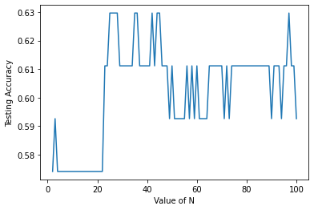
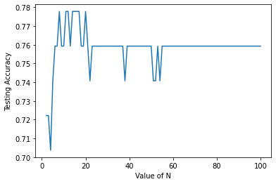
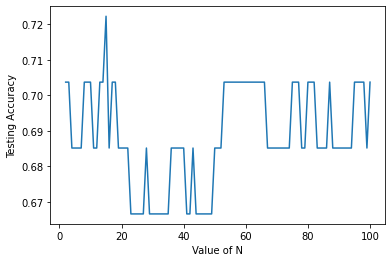

Studi Kasus Heart Disease 5 Fitur Part 2
Contents
Studi Kasus Heart Disease 5 Fitur Part 2#
Implementasi dengan Menggunakan Model Bagging Classifier , Random forest dan Stacking clasifier Dengan data tanpa Normalisasi.
Membaca data#
from scipy.io import arff
import pandas as pd
from sklearn.preprocessing import MinMaxScaler
import joblib
data = pd.read_csv('https://raw.githubusercontent.com/soumya-mishra/Heart-Disease_DT/main/heart_v2.csv')
df = data
df.head()
| age | sex | BP | cholestrol | heart disease | |
|---|---|---|---|---|---|
| 0 | 70 | 1 | 130 | 322 | 1 |
| 1 | 67 | 0 | 115 | 564 | 0 |
| 2 | 57 | 1 | 124 | 261 | 1 |
| 3 | 64 | 1 | 128 | 263 | 0 |
| 4 | 74 | 0 | 120 | 269 | 0 |
Memisahkan Label#
y = df['heart disease'].values
y[0:5]
array([1, 0, 1, 0, 0])
X = df.drop(columns=['heart disease'])
X
| age | sex | BP | cholestrol | |
|---|---|---|---|---|
| 0 | 70 | 1 | 130 | 322 |
| 1 | 67 | 0 | 115 | 564 |
| 2 | 57 | 1 | 124 | 261 |
| 3 | 64 | 1 | 128 | 263 |
| 4 | 74 | 0 | 120 | 269 |
| ... | ... | ... | ... | ... |
| 265 | 52 | 1 | 172 | 199 |
| 266 | 44 | 1 | 120 | 263 |
| 267 | 56 | 0 | 140 | 294 |
| 268 | 57 | 1 | 140 | 192 |
| 269 | 67 | 1 | 160 | 286 |
270 rows × 4 columns
Preprocessing Data (Min-Max)#
# scaler = MinMaxScaler()
# scaled = scaler.fit_transform(X)
# features_names = X.columns.copy()
# scaled_features = pd.DataFrame(scaled, columns=features_names)
# scaled_features.head(10)
Split Data#
from sklearn.model_selection import train_test_split
X_train, X_test, y_train, y_test=train_test_split(X, y, test_size=0.2, random_state=1)
Eksekusi Pada Model Bagging Clasifier#
Bagging Clasifier Dengan SVC#
Mencari akurasi tertinggi dengan N_estimators dari 2 sampai 100
# import model
from sklearn.naive_bayes import GaussianNB
from sklearn.svm import SVC
from sklearn.ensemble import BaggingClassifier
from sklearn.datasets import make_classification
from sklearn.metrics import accuracy_score
# eksekusi data pada model
X, y = make_classification(n_samples=100, n_features=4,
n_informative=2, n_redundant=0,
random_state=0, shuffle=False)
# bagging clasifier menggunakan SVC dan Gaussian(naive bayes)
# # SVC
n_estimator = range(2,101)
akurasi_bags_1 = []
for n in n_estimator:
# inisialisasi model
clf = BaggingClassifier(base_estimator=SVC(),
n_estimators=n, random_state=40).fit(X_train, y_train)
# predict x_test
y_pred = clf.predict(X_test)
# akurasi count
akurasi_bags_1.append(accuracy_score(y_test,y_pred))
Visualisasi Akurasi Bagging dengan SVC
import matplotlib.pyplot as plt
plt.plot(n_estimator,akurasi_bags_1)
plt.xlabel('Value of N')
plt.ylabel('Testing Accuracy')
plt.show()

Mencari n_estimator dengan Akurasi Tertinggi
akurasi_bags_1.index(max(akurasi_bags_1))+1 , max(akurasi_bags_1)
(24, 0.6296296296296297)
Bagging Clasifier Dengan GaussianNB#
Mencari akurasi tertinggi dengan N_estimators dari 2 sampai 100
akurasi_bags_2= []
for n in n_estimator:
# inisialisasi model
clf2 = BaggingClassifier(base_estimator=GaussianNB(),
n_estimators=n, random_state=40).fit(X_train, y_train)
# predict x_test
y_pred2 = clf2.predict(X_test)
# akurasi count
akurasi_bags_2.append(accuracy_score(y_test,y_pred2))
import joblib
clf2 = BaggingClassifier(base_estimator=GaussianNB(),
n_estimators=6, random_state=40).fit(X_train, y_train)
filenameBCG = '/content/drive/MyDrive/datamining/tugas/cobamodel/bagginggaussian_1.pkl'
joblib.dump(clf2,filenameBCG)
['/content/drive/MyDrive/datamining/tugas/cobamodel/bagginggaussian_1.pkl']
from google.colab import drive
drive.mount('/content/drive')
KeyboardInterruptTraceback (most recent call last)
<ipython-input-11-d5df0069828e> in <module>
1 from google.colab import drive
----> 2 drive.mount('/content/drive')
/usr/local/lib/python3.7/dist-packages/google/colab/drive.py in mount(mountpoint, force_remount, timeout_ms, readonly)
104 timeout_ms=timeout_ms,
105 ephemeral=True,
--> 106 readonly=readonly)
107
108
/usr/local/lib/python3.7/dist-packages/google/colab/drive.py in _mount(mountpoint, force_remount, timeout_ms, ephemeral, readonly)
123 if ephemeral:
124 _message.blocking_request(
--> 125 'request_auth', request={'authType': 'dfs_ephemeral'}, timeout_sec=None)
126
127 mountpoint = _os.path.expanduser(mountpoint)
/usr/local/lib/python3.7/dist-packages/google/colab/_message.py in blocking_request(request_type, request, timeout_sec, parent)
169 request_id = send_request(
170 request_type, request, parent=parent, expect_reply=True)
--> 171 return read_reply_from_input(request_id, timeout_sec)
/usr/local/lib/python3.7/dist-packages/google/colab/_message.py in read_reply_from_input(message_id, timeout_sec)
95 reply = _read_next_input_message()
96 if reply == _NOT_READY or not isinstance(reply, dict):
---> 97 time.sleep(0.025)
98 continue
99 if (reply.get('type') == 'colab_reply' and
KeyboardInterrupt:
Visualisasi Hasil Akurasi
plt.plot(n_estimator,akurasi_bags_2)
plt.xlabel('Value of N')
plt.ylabel('Testing Accuracy')
plt.show()

Mencari Akurasi Tertinggi
akurasi_bags_2.index(max(akurasi_bags_2))+1 , max(akurasi_bags_2)
(7, 0.7777777777777778)
Eksekusi Pada Model Random Forest#
Mencari akurasi tertinggi dengan N_estimators dari 2 sampai 100
from sklearn.ensemble import RandomForestClassifier
akurasirf= []
for n in n_estimator:
# inisialisasi model
rf = RandomForestClassifier(
n_estimators=n,max_depth=2, random_state=40).fit(X_train, y_train)
# predict x_test
y_predrf = rf.predict(X_test)
# akurasi count
akurasirf.append(accuracy_score(y_test,y_predrf))
rf = RandomForestClassifier(
n_estimators=13,max_depth=2, random_state=40).fit(X_train, y_train)
filenameRF = '/content/drive/MyDrive/datamining/tugas/cobamodel/randomforest_1.pkl'
joblib.dump(rf,filenameRF)
['/content/drive/MyDrive/datamining/tugas/cobamodel/randomforest_1.pkl']
Visualisasi Hasil Akurasi
plt.plot(n_estimator,akurasirf)
plt.xlabel('Value of N')
plt.ylabel('Testing Accuracy')
plt.show()

Mencari Akurasi Tertinggi dari N
akurasirf.index(max(akurasirf))+1 , max(akurasirf)
(14, 0.7222222222222222)
Eksekusi Pada Model Stacking clasifier#
from sklearn.ensemble import StackingClassifier
from sklearn.tree import DecisionTreeClassifier
# estimator menggunakan Random Forest, SVC GaussianNB
## untuk n_estimators menggunakan n dengan akurasi tertinggi
estimators = [
('rf', RandomForestClassifier(n_estimators=38, max_depth=2, random_state=40)),
('svc', SVC()),
('gnb', GaussianNB()),
('bagsvc', BaggingClassifier(base_estimator=SVC(),
n_estimators=14, random_state=40)),
('baggnb' ,BaggingClassifier(base_estimator=GaussianNB(),
n_estimators=9, random_state=40))
]
sc = StackingClassifier(
estimators=estimators, final_estimator=SVC()).fit(X_train, y_train)
y_predsc = sc.predict(X_test)
akurasi = accuracy_score(y_test,y_predsc)
Hasil Akurasi Dan Score dari Stacking Clasifier#
print(f'Akurasi Untuk Stacking Clasifier = {akurasi}')
Akurasi Untuk Stacking Clasifier = 0.7592592592592593